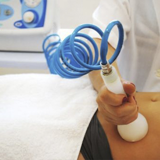

Criolipólise
A criolipólise é um método não invasivo, realizado em clínicas de estética por um profissional capacitado, que age na redução da gordura corporal atra vés do vacuo.

Leia Mais
Endermologia
O equipamento de endermologia realiza uma massagem profunda para melhorar o aspecto da celulite e gordura localizada, isso acontece através da sucção.

Corrente Russa
A Corrente Russa é uma técnica que usa corrente
elétrica para melhorar o tônus muscular e circulação sanguínea.
O estímulo elétrico usado produz uma contração muscular no local.